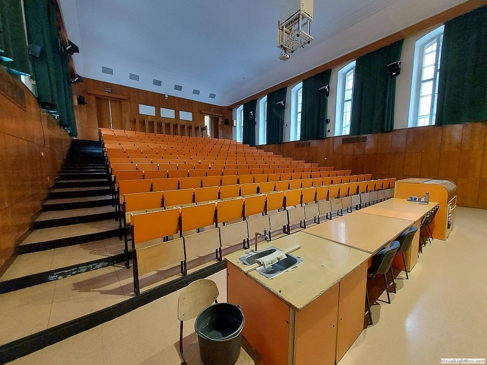

×
Mellékhelyiségek
Étel / Ital
Termek
Tömegközlekedés
Nyomtatási opciók
Keres
Itt lesznek a keresés eredményei

Előnézet
Itt
fog megjelenni a terem előnézete
BME Építőmérnöki Kar
Névjegy
Powered by Dorvig™
Oldalsáv